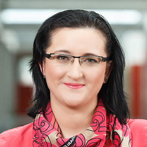

Invited Speakers

Marinka Zitnik
Assistant Professor, Harvard Medical School
Jayashree Kalpathy-Cramer
Professor, School of Medicine, University of Colorado
Professor, School of Medicine, University of Colorado
Shandong Wu
Associate Professor, University of Pittsburgh
Associate Professor, University of Pittsburgh
Mert Sabuncu
Professor, Cornell University
Professor, Cornell University
Sumit Chopra
Associate Professor, NYU
Associate Professor, NYU
Holger Roth
Senior Research Scientist, NVIDIA
Senior Research Scientist, NVIDIA
Adam Yala
Assistant Professor, UC Berkeley & UCSF
Assistant Professor, UC Berkeley & UCSF

Assistant Professor, Stanford University